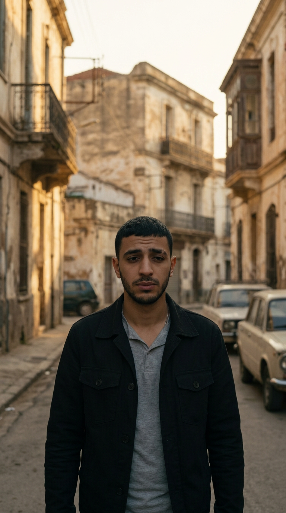
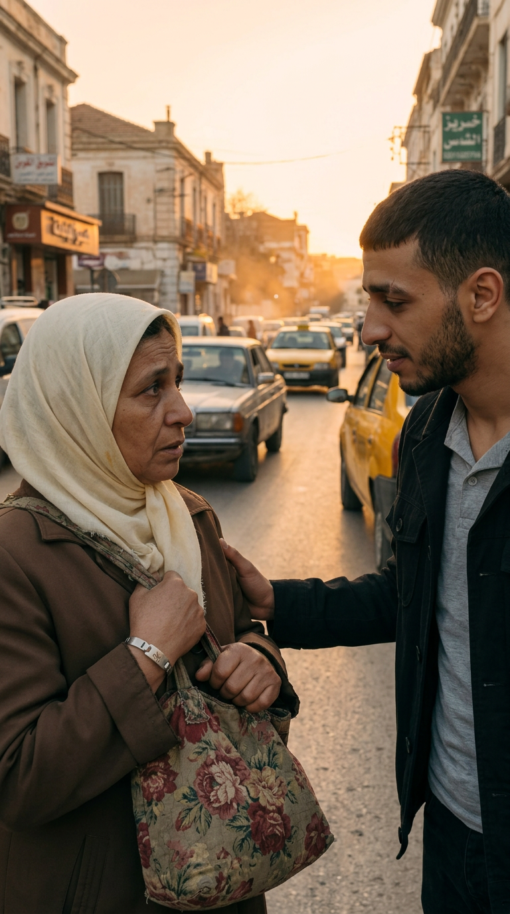

حزمة Google Flow — اللقطة 1 واللقطة 2
فيلم: المرأة اللي رجعت · 9:16 · استعمل الصورة كـ Start Frame ثم الصق البرومبت كما هو.
طريقة العمل في Google Flow
- افتح https://labs.google/fx/tools/flow وأنشئ مشروع جديد باسم: المرأة اللي رجعت.
- في صندوق البرومبت: اختر الموديل ثم Video → Frames.
- اسحب صورة اللقطة إلى Add start frame. لا تحط End frame.
- اختياري لكن مهم للوجوه: أضف REF_yacine.png و REF_fatima.png كـ Ingredients / Characters.
- الإعدادات: Aspect 9:16 · Length 8 ثوانٍ · Outputs 2 أو 4 · الموديل Veo 3 / Veo 3.1.
- الصق برومبت Flow الجاهز تحت، ثم Generate.
- اختار النسخة اللي الوجه فيها ما تبدّلش. قصّ المدة بعدين: اللقطة 1 إلى 5 ث، اللقطة 2 إلى 7 ث.
مهم: الصورة هي أول فريم. الحركة لازم تبدأ منها كما هي. ما تولّدش صورة جديدة. إذا الوجه تبدّل، أعد التوليد.
اللقطة 01 — ياسين وحدو 00:00–00:05 5 ثوانٍ

ارفع هذه الصورة كـ Start Frame:
SHOT01_start_frame.png
الحوار / الراوي بالدارجة — ما يفتحش فمه هنا
كان ياسين دايماً يقول: أمي ضاعت عليا وأنا صغير.
هذا Voice Over بعد التوليد. في Flow خلّيه ساكت باش الفم ما يتحركش غلط.
1) برومبت الفيديو الرسمي من المستودع — كما هو
Animate a slow tracking shot from behind Yacine, then gently move to a side close-up of his sad face. Add subtle walking motion, soft sunset light flicker, background cars moving slowly, cinematic emotional mood, no face change.
2) برومبت Flow الجاهز للنسخ — موصى به لهذه الصورة
الصورة أمامية، لذلك الحركة تبدأ منها (ما نقدرش نبداو من ظهره). هذا البرومبت يحافظ على معنى المشهد الرسمي.
Use the provided image as the exact first frame and keep the same character identity.
A 27-year-old Algerian man, short black hair, light stubble beard, brown eyes, kind sad face, small scar above his left eyebrow, wearing a black jacket over a gray shirt, walking slowly forward on an old Algerian street at sunset.
Animate subtle walking motion in his shoulders and body. Slow cinematic push-in toward his sad face. Soft sunset light flicker. Background cars moving slowly. Emotional quiet mood. Natural micro-expressions: a blink, a small sad breath. He does not speak. Mouth stays closed. No talking.
Realistic cinematic emotional drama, vertical 9:16, subtle motion, slow camera movement, no face change, no clothing change, no distortion, no text, no watermark, no extra fingers.
Negative / ممنوع
different face, changed identity, different clothes, deformed face, bad hands, extra fingers, blurry, cartoon, anime, distorted body, watermark, wrong age, text artifacts, face morphing, talking, open mouth, smile
اللقطة 02 — يعاون العجوز 00:05–00:12 7 ثوانٍ

ارفع هذه الصورة كـ Start Frame:
SHOT02_start_frame.png
الحوار بالدارجة — ياسين يتكلم وفمه يتحرك
ياسين: يمّا، نعاونك تقطعي الطريق؟
هذا السطر يتحط داخل برومبت Flow بين علامتي تنصيص باش Veo يزامن الفم.
1) برومبت الفيديو الرسمي من المستودع — كما هو
Animate Yacine walking slowly toward Fatima. Fatima looks nervous beside the road. Add slight camera push-in, cars passing in background with mild motion blur, realistic body movement, keep faces consistent.
2) برومبت Flow الجاهز للنسخ — موصى به + كلام دارجة وتحريك فم
Use the provided image as the exact first frame and keep the same character identities.
YACINE: a 27-year-old Algerian man, short black hair, light stubble beard, brown eyes, small scar above his left eyebrow, black jacket over a gray shirt.
FATIMA: a 58-year-old Algerian elderly woman, tired but kind face, brown sad eyes, old white hijab, simple brown coat, worn floral fabric bag, silver bracelet on her right wrist with a small letter Y.
Animate Yacine walking slowly toward Fatima. Fatima looks nervous beside the road. Slight camera push-in. Cars passing in the background with mild motion blur. Realistic body movement. Keep faces consistent.
The young man looks at her kindly and speaks Algerian Darija with clear realistic lip-sync, a soft warm male voice, and says: "يمّا، نعاونك تقطعي الطريق؟"
The elderly woman listens, slightly trembling, nervous but hopeful, eyes searching his face. She does not speak yet.
Realistic cinematic emotional drama, warm sunset light, vertical 9:16, no face change, no clothing change, no distortion, no text, no watermark, no extra fingers.
Negative / ممنوع
different face, changed identity, different clothes, deformed face, bad hands, extra fingers, blurry, cartoon, anime, distorted body, watermark, wrong age, text artifacts, face morphing, Fatima speaking, English speech, modern phone, logo
بعد ما يطلع الفيديو من Flow
- حمّل أفضل نسخة من كل لقطة.
- سمّيهم: shot_01_flow.mp4 و shot_02_flow.mp4.
- ارفعهم للمستودع في: films/001_al_maraa_elli_rjaat/exports/ أو أرسلهم هنا.
- أنا نركّبهم: قص المدة، صوت الراوي للقطة 1، ترجمة دارجة، موسيقى، ثم نكمّلو اللقطات الجاية بنفس الطريقة.
اللقطة 1: ياسين يمشي وهو حزين، فمه مسدود، الراوي يحكي فوقها.
اللقطة 2: ياسين يقول الجملة بالدارجة وفمه يتحرك حركة حقيقية.